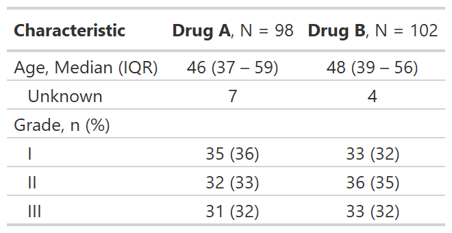

![[Experimental]](../help/figures/lifecycle-experimental.svg) The following themes are available to use within the gtsummary package.
Print theme elements with
The following themes are available to use within the gtsummary package.
Print theme elements with theme_gtsummary_journal(set_theme = FALSE) %>% print().
Review the themes vignette
for details.
| theme_gtsummary {gtsummary} | R Documentation |
The following themes are available to use within the gtsummary package.
Print theme elements with theme_gtsummary_journal(set_theme = FALSE) %>% print().
Review the themes vignette
for details.
theme_gtsummary_journal(
journal = c("jama", "nejm", "lancet"),
set_theme = TRUE
)
theme_gtsummary_compact(set_theme = TRUE)
theme_gtsummary_printer(
print_engine = c("gt", "kable", "kable_extra", "flextable", "huxtable", "tibble"),
set_theme = TRUE
)
theme_gtsummary_language(
language = c("de", "en", "es", "fr", "gu", "hi", "ja", "mr", "pt", "se", "zh-cn",
"zh-tw"),
decimal.mark = NULL,
big.mark = NULL,
iqr.sep = NULL,
ci.sep = NULL,
set_theme = TRUE
)
theme_gtsummary_continuous2(
statistic = "{median} ({p25, {p75})",
set_theme = TRUE
)
theme_gtsummary_mean_sd(set_theme = TRUE)
journal |
String indicating the journal theme to follow.
|
set_theme |
Logical indicating whether to set the theme. Default is |
print_engine |
String indicating the print method. Must be one of
|
language |
String indicating language. Must be one of If a language is missing a translation for a word or phrase, please feel free to reach out on GitHub with the translated text! |
decimal.mark |
The character to be used to indicate the numeric decimal point.
Default is |
big.mark |
Character used between every 3 digits to separate
hundreds/thousands/millions/etc.
Default is |
iqr.sep |
string indicating separator for the default IQR in |
ci.sep |
string indicating separator for confidence intervals.
If |
statistic |
Default statistic continuous variables |
theme_gtsummary_journal(journal=)
"jama" The Journal of the American Medical Association
"nejm" The New England Journal of Medicine
"lancet" The Lancet
theme_gtsummary_compact()
tables printed with gt, flextable, kableExtra, or huxtable will be compact with smaller font size and reduced cell padding
theme_gtsummary_printer(print_engine=)
"gt" sets the gt package as the default print engine
"flextable" sets the flextable package as the default print engine
"huxtable" sets the huxtable package as the default print engine
"kable" sets the knitr::kable() function as the default print engine
"kable_extra" sets the kableExtra package as the default print engine
"tibble" returns output as tibble
theme_gtsummary_continuous2()
Set all continuous variables to summary type "continuous2" by default
Use the statistic= argument to set the default continuous variable summary statistics
theme_gtsummary_mean_sd()
Set default summary statistics to mean and standard deviation in tbl_summary()
Set default tests in add_p.tbl_summary() to t-tests and ANOVA
Use reset_gtsummary_theme() to restore the default settings
Review the themes vignette to create your own themes.
Example

set_gtsummary_theme(), reset_gtsummary_theme()
# Setting JAMA theme for gtsummary
theme_gtsummary_journal("jama")
# Themes can be combined by including more than one
theme_gtsummary_compact()
set_gtsummary_theme_ex1 <-
trial %>%
select(age, grade, trt) %>%
tbl_summary(by = trt) %>%
add_stat_label() %>%
as_gt()
# reset gtsummary themes
reset_gtsummary_theme()